Nach der Turnübung rief der Trainer: „Applaus für unseren schokobraunen Freund!“ Was macht man da als Zuschauer? Eine Kolumne von Arno Frank.
Die Bundesregierung macht bisher einen guten Job in der Corona-Pandemie. Die Gesellschaft leider nicht.
Wer will, dass das Klimaproblem gelöst wird, kann nicht im Sandkasten der moralischen Überlegenheit bleiben.
Wer Hunde hat, braucht Leadership. Aber es ist nicht einfach, Leader zu sein. Auf der Hundewiese wird das trainiert. Der Fotograf Nikita Teryoshin ging für taz FUTURZWEI auf Feldforschung.
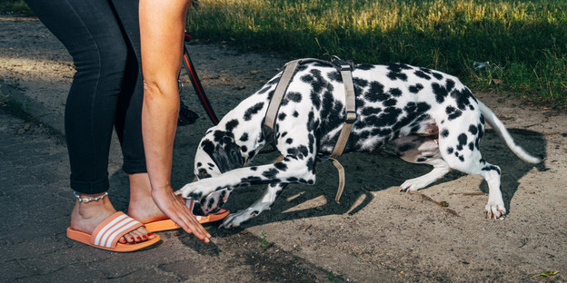Gesundheitsminister Spahns Pflegereform hat eine helle, aber auch eine dunkle Seite: Der Druck auf Alte wird erhöht, in stationäre Pflegeheime zu gehen. Dort erwartet sie der Tod.
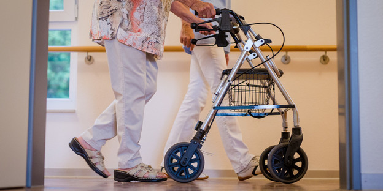Zur Frankfurter Buchmesse stellt die taz FUTURZWEI-Literaturliste die besten Bücher mit Zukunft zusammen.
Ein neuer sozialer Kompromiss muss kommen, aber der Verdi-Streik hat damit nichts zu tun. Er befördert nur die Vorurteile gegenüber den Leuten im öffentlichen Dienst.
Ich möchte erzählen von Frauen wie Marguerite Barankitse in Burundi, die riesige humanitäre Organisationen aufbauen und dabei lächeln.
Arme Opfer-Ossis? Geht's noch? Die deutsche Wiedervereinigung war ein historischer Glücksmoment, mutig ergriffen, kompetent gemanagt. Eine Widerrede.

Marie-Luise Wolff, Vorstandsvorsitzende des Ökostrom-Anbieters Entega, spricht mit taz FUTURZWEI über Führung.
Mit einer Grundsatzrede vor dem Brandenburger Tor stimmt Luisa Neubauer die Mehrheitsgesellschaft auf die Klimawahl 2021 ein.
Die Leute glauben, dass Union und Grüne das Ökowirtschaften schon hinkriegen werden. Die offene Frage ist: Wie geht das?
Was soll eine Führerin – oder sagen wir: Leaderin – leisten? Sibylle Berg, Schriftstellerin, fordert: Konzepte statt Führer*innen!
Erreichen Jungs, die sich für Leader halten und dauernd auf den Tisch hauen, dass sich irgendwer von ihnen führen lässt?
Uwe Schneidewind ist ein international angesehener Wissenschaftler. Nun will er Oberbürgermeister von Wuppertal werden. Warum das?
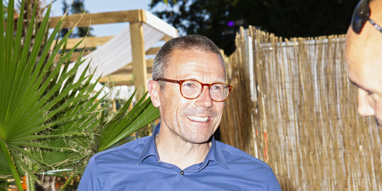Die IG BCE hat den Anfang gemacht. Sind die deutschen Gewerkschaften endlich bereit für den Wandel?
Aminata Touré, neuer Star der Grünen und Landtagsvizepräsidentin in Schleswig-Holstein, füllt den taz FUTURZWEI-Fragebogen aus.
Die Folgekosten der von Corona heruntergebremsten Wirtschaft sind immens. Wie kann man den Schaden begrenzen und gleichzeitig sozialökologisch umsteuern? Zwei Vorschläge.
Zu jedem kritischen Partytalk gehören die angeblichen Defizite der Elektromobilität. Aber die Kinderarbeit! Aber die seltenen Erden! Aber, aber, aber! Der Faktencheck von Energieprofessor Volker Quaschning.
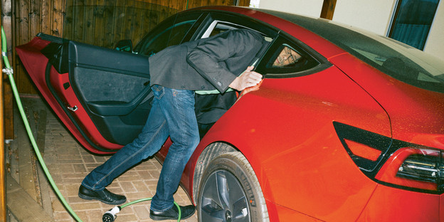Der Künstler Stefan Frankenberger über sein Projekt „metropa“, ein großes europäisches Superschnellbahnnetz.
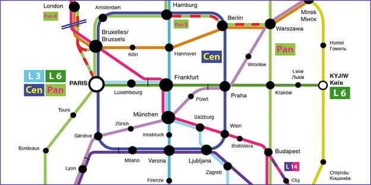Warum es wichtig ist, wer Joe Bidens Vizepräsidentschaftskandidatin wird.
Ferienzeit ist Lesezeit! Die taz FUTURZWEI-Literaturliste stellt die besten Bücher mit Zukunft vor.
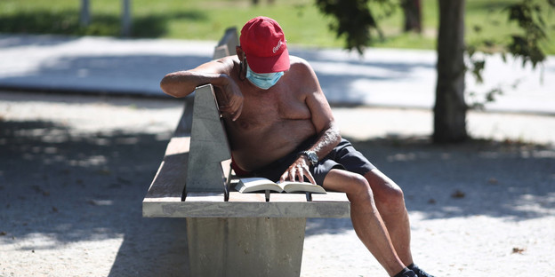Protestexperte Armin Nassehi über Luisa Neubauer, die Grünen, Pegida, Anti-Atom – und warum alle Protestler am Ende unzufrieden sind.
Diana zur Löwen, 24, wurde zum Star bei Instagram mit Sex-, Flirt- und Partytipps. Dann entdeckte sie Fridays for Future. Und nun?
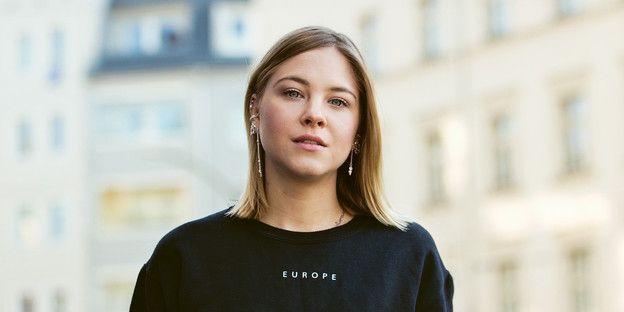Die liberalen Kosmopoliten haben keine Zeit für Menschheitsprobleme. Sie sind mit sich beschäftigt. Noch geht es auch ohne sie.

Wir haben unsere Abonent*innen gefragt, was sie an taz FUTURZWEI schätzen und was wir besser machen können.
Der Psychologe Ahmad Mansour über die Realität der Integration in Deutschland und seine Lebenserfahrung von vier Shutdowns.
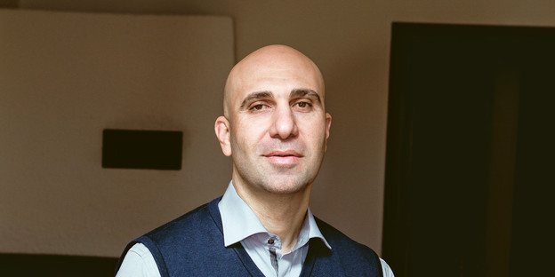Um die tief demokratisierte Bundesrepublik gegen ihre Feinde verteidigen zu können, braucht es einen grünen Innenminister, der das Gewaltmonopol befestigt.
Wer „nach Corona“ Neues anfangen will, muss mit Altem aufhören. Aber wir können einfach nicht aufhören. Mit nichts. Deshalb wählen wir Weitermachen.

Das Coronavirus macht einen Epochenbruch sichtbar, in dem das alte Denken nicht mehr ausreicht, um die kommenden Spannungen aufzulösen.
Die Pandemie könnte eine Chance sein, endlich in die Digitalisierung des Bildungssystems zu investieren.
Der New Yorker Schriftsteller Jonathan Safran Foer mit neun Thesen zum menschlichen Umgang mit der Klimakrise.
Die Corona-Milliardenhilfen und fehlende Steuereinnahmen nehmen der jungen Generation in ganz Europa die Chance auf Zukunftsgestaltung. Ein Vorschlag.
Aladin El-Mafaalani, Erziehungswissenschaftler, hat drei neue Gedanken zu Bildung.
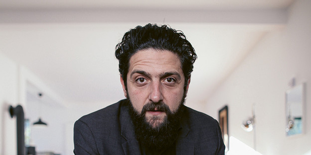Hinter dem Geldverteilen der Regierung und der Erwartung der Bürger steckt die Weigerung, das Ausmaß der Krise anzuerkennen.
Wir sind in einer ökonomischen, kulturellen und ökologischen Überdynamisierungskrise. Die Antwort darauf ist ein Liberalismus, der alle drei Krisen reguliert.
In Zeiten von Seuchen werden blitzartig neue Normen etabliert. Wer sich verweigert, gilt als unsolidarisch.
Sollen die über 65-Jährigen zu Hause bleiben und die Jüngeren wieder raus dürfen? Ein Kommentar von Udo Knapp.
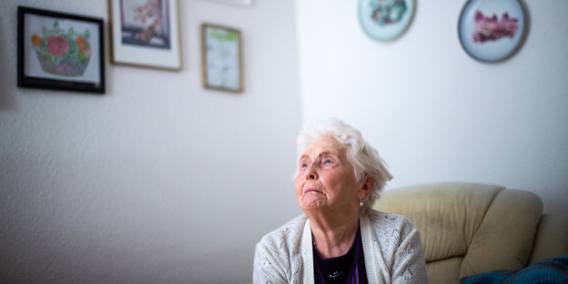Er hat Angst, er hat konservative Bedürfnisse, er zieht drei Lehren aus der Pandemie. Deutschlands größter Europäer im taz FUTURZWEI-Gespräch.
Hier der maliziöse „alte weiße Mann“, dort die „zornige junge Frau“ – jeweils mit verlässlich erregter Gefolgschaft. Ein Gegensatzpaar wie beim „Celebrity Deathmatch“.
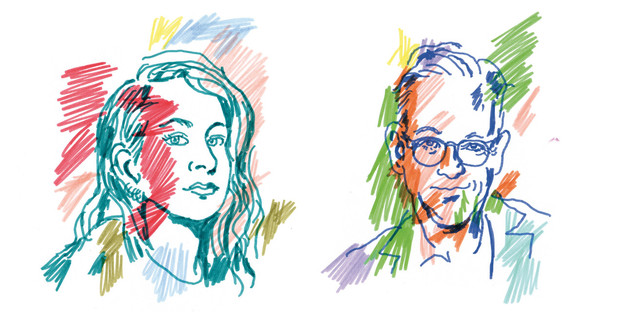Darf eine Feministin einen NZZ lesenden CSU-Mitarbeiter daten? Heike-Melba Fendel über linken Sex.
Gegenclowns wie Corbyn, Politikfolkloristinnen wie Naomi Klein, Theorie-Hochstapler wie Varoufakis: Wir brauchen eine neue und zeitgemäßere Form der politischen Differenzierung als „links“ und „rechts“.
Hanni Liang ist eine begnadete Pianistin, 26 Jahre jung, sehr klug. Sie spielt aber nicht nur hinreißende Konzerte, sie leitet auch ein gemeinnütziges Künstlerprojekt.
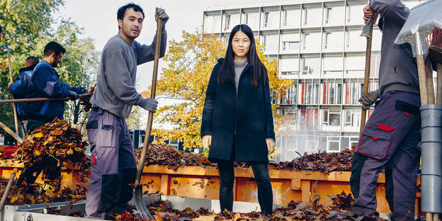Robin Hinsch und Moritz Frischkorn waren im Nigerdelta, wo Ölfirmen die Lebensgrundlagen der Menschen bereits zerstört haben.
Die Fridays-for-Future-Gesellschaft hat der Bundesregierung klar gesagt, was es mit der Erderhitzung auf sich hat – und sie reagiert immer noch nicht. Brauchen wir also 2020 zivilen Ungehorsam und Rebellion gegen die Regierungen?
Carla Reemtsma, Fridays-For-Future-Aktivistin, beantwortet die wirklich wichtigen Fragen.
Wie kriegt man Konservative dazu, ernsthafte Klimapolitik zu machen, Klaus Töpfer?
An der Zerrüttetheit der christdemokratischen Seele entscheidet sich nicht nur das Schicksal der Union, sondern auch die deutsche Klimapolitik.
Wir haben keine Zeit mehr. Was tun? Armin Nassehi, Soziologe, über neues Denken zur Lösung der Klimakrise.
Erst nachdem er Veganer wird, versteht Bernd Ulrich, warum es in Deutschland keine Klimapolitik gibt. Jetzt krempelt er das politische Prinzip der Bundesrepublik um.
Das Abo umfasst jährlich vier Ausgaben und kostet 30 Euro. Dazu gibt es unseren Rucksack mit futuristischer Kunst von Donata Kindesperk als Geschenk.
Das taz FUTURZWEI ePaper spart Platz, Papier und Rausgehen: Sie können das Magazin für Zukunft und Politik auch ganz bequem auf dem Handy, Tablet oder Computer lesen.
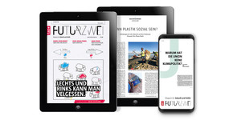Der Aufstieg der autoritären Parteien zeigt, dass es wieder Bedarf an Führern gibt. Aber wie sieht zeitgemäße liberaldemokratische Leadership aus, die Krisen nicht eskaliert, sondern politisch bearbeitet?
Mit der Unternehmensführerin Marie-Luise Wolff (entega), der Schriftstellerin Sibylle Berg, der Schauspielerin Katja Riemann, der Publizistin Samira El Ouassil, der Historikerin Hedwig Richter, der Politikerin Diana Kinnert, der Integrationsexpertin Bilkay Kadem und Harald Welzer.
Mit unserem Geschenkpaket erhalten Sie einen Verschenkgutschein für ein einjähriges taz FUTURZWEI-Abo (4 Ausgaben) und die Solarlampe „Little Sun“.
Ich bin damit einverstanden, dass mir externe Inhalte angezeigt werden. Damit können personenbezogene Daten an Drittplattformen übermittelt werden. Mehr dazu in unserer Datenschutzerklärung.
Nach der Turnübung rief der Trainer: „Applaus für unseren schokobraunen Freund!“ Was macht man da als Zuschauer? Eine Kolumne von Arno Frank.
Die Bundesregierung macht bisher einen guten Job in der Corona-Pandemie. Die Gesellschaft leider nicht.
Wer will, dass das Klimaproblem gelöst wird, kann nicht im Sandkasten der moralischen Überlegenheit bleiben.
Wer Hunde hat, braucht Leadership. Aber es ist nicht einfach, Leader zu sein. Auf der Hundewiese wird das trainiert. Der Fotograf Nikita Teryoshin ging für taz FUTURZWEI auf Feldforschung.
Gesundheitsminister Spahns Pflegereform hat eine helle, aber auch eine dunkle Seite: Der Druck auf Alte wird erhöht, in stationäre Pflegeheime zu gehen. Dort erwartet sie der Tod.
Zur Frankfurter Buchmesse stellt die taz FUTURZWEI-Literaturliste die besten Bücher mit Zukunft zusammen.
Ein neuer sozialer Kompromiss muss kommen, aber der Verdi-Streik hat damit nichts zu tun. Er befördert nur die Vorurteile gegenüber den Leuten im öffentlichen Dienst.
Ich möchte erzählen von Frauen wie Marguerite Barankitse in Burundi, die riesige humanitäre Organisationen aufbauen und dabei lächeln.

Sind sie Feinde – oder sogar Verbündete für eine neue Klimapolitik? FFF-Aktivistin Luisa Neubauer und EnBW-Chef Frank Mastiaux im Streitgespräch.
Die Soziologin Dana Giesecke und der Sozialpsychologe Harald Welzer haben sich mit jungen Erwachsenen unterhalten und daraus eine Ausstellung gemacht.
Ulf Poschardt (Welt-Chefredakteur), Ahmad Mansour (Islamexperte) und Konstantin Kuhle (MdB der FDP) im Gespräch mit Peter Unfried.
Vieles ist schlimm, aber Jagoda Marinić und Harald Welzer sagen, wie wir es besser machen können.
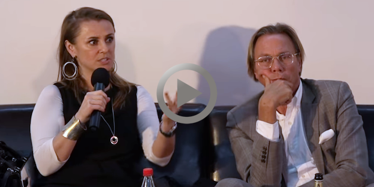Nikita Teryoshins Fotoserie über „Glanz und Elend der Bundesparteitage“ aus taz FUTURZWEI N°2 ist für den Nannen Preis 2018 nominiert.
Mit Harald Welzer wird aus zeozwei taz FUTURZWEI. Warum erklärt Chefredakteur Peter Unfried im Hausblog.
Ich bin damit einverstanden, dass mir externe Inhalte angezeigt werden. Damit können personenbezogene Daten an Drittplattformen übermittelt werden. Mehr dazu in unserer Datenschutzerklärung.
taz FUTURZWEI N°14: 8. September 2020
taz FUTURZWEI N°15: 8. Dezember 2020